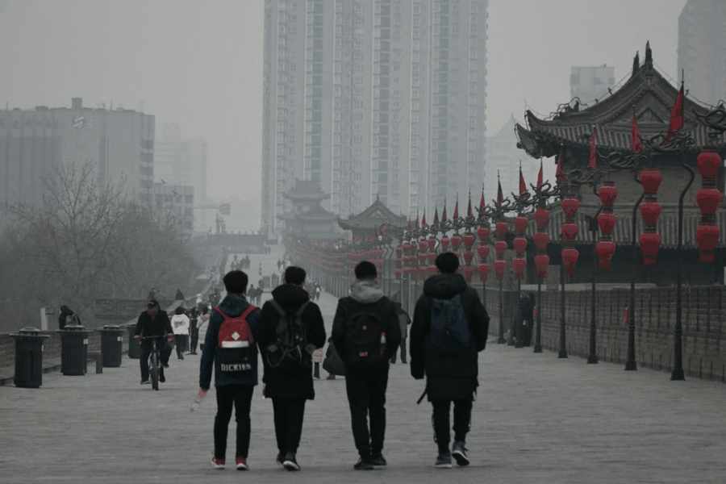
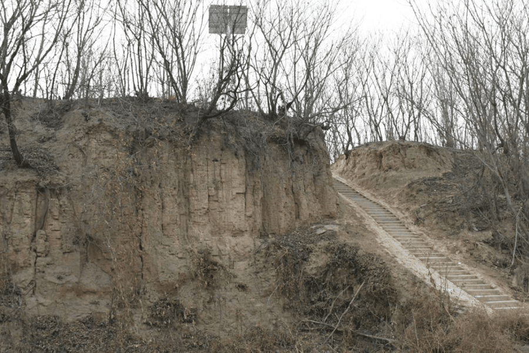
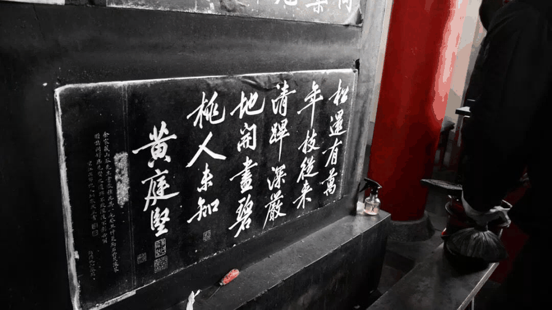
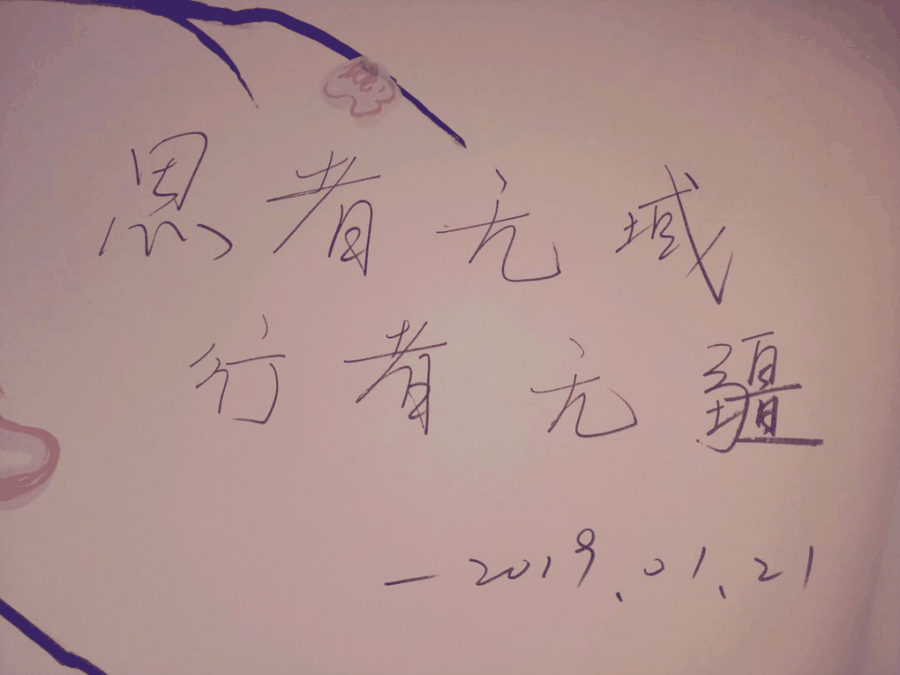

【秦简拓语·十五】古今多少事，都付笑谈中
古今多少事，都付笑谈中
13朝古都西安，见证了封建王朝的鼎盛时代，也蕴含着丰富的历史资源、文化底蕴；19位行者，致力于探寻历史文化，保护文物古迹，二者结合的这一次实践，必然充满惊喜，令人难忘。
游走在古城的大街小巷，感受着古城传统文化，漫步在古城墙上，聆听着时代的气息，置身于各个名胜古迹，领略着古韵名都西安的魅力。

西安不仅有着众多历史遗迹，背后也蕴藏着当时的社会环境和时代背景，仿佛一副封建王朝缩略图。
例如阿房宫的历史遗址，其实并不如大家想象中“五步一楼，十步一阁；廊腰缦回，檐牙高啄”的宏大盛景，那不加修饰呈现于眼前的只是“东西五百步，南北五十丈”的大夯土台的前殿遗址。不仅感慨纵使像当年秦帝国那般富足强大，如今却也落得如此破败凄凉的景象，同时悲痛于秦的奢靡酷政。

历史，本该如此，保留其本真的东西，展现其最初的样貌，历史的意韵、历史的盛衰，都留待后人诉说。虽不见其繁华，却得一份“秦亡于奢”的警示。以史为鉴，我想意义便在于此。
又如那坐北朝南，气势宏伟壮观的乾陵，作为武则天和李治，两位皇帝的合葬陵墓，它宛如婀娜曼妙的美人的形态以及千年时间原封未动，无人盗墓的故事都颇具传奇色彩，令人叹为观止，但最吸引我的，还是那凝重厚实，虽样子简简单单确是千年之谜的“无字碑”。
关于此碑为何无字众说纷纭，但我最愿意相信的，还是武则天想用无字的空白，留给后人一份神秘的答卷，让历史去填写自己的功过是非。作为历史上唯一的一位女皇帝，她确实有着杰出的功绩，正是她的励精图治才前承贞观后启开元，引领大唐帝国走向辉煌。从这块无字碑上，也足见一带女皇的胸怀。
千古多少事，都付笑谈中，吾之功过，留待历史评说！
另外，此行让我感触颇深的便是那些文物古迹的今貌，很多看着着实令人心疼。

这其中比较突出的是碑林博物馆，那块块碑石尽显书法名家洒脱墨迹，每个字都犹如鬼斧神工，向世人传达着思想内涵和文人风骨。然此等书法艺术的瑰宝上却留有很多不和谐的景象——不堪入目的“到此一游”、信笔涂鸦。本历经千年仍傲然挺立，如今却因游客的某些行径改变了你的面容。哀叹之余希望尽最大努力护你周全，让你今后可安好。
之前就听很多同学提起过“行者无疆”的名字，但正所谓闻名不如见面，很多事还是要亲身经历过才能体味到。大家的认真严谨，一丝不苟，为了同一个目标各司其职、共同努力不仅深深震撼着我，也让我沉浸其中，贡献自己的一份力量。我想也正是因为有着这样一起奋斗做一件事的经历，才能让大家结下深厚的情谊，留下一段难忘的经历。行者无疆，不负相遇。

来源丨行者无疆实践团
文字丨郭新明
排版丨王洁
审核丨潘雯雯 邓子孚
行者无疆实践团
QQ：2758025831

随行者一起认识世界
长按二维码关注